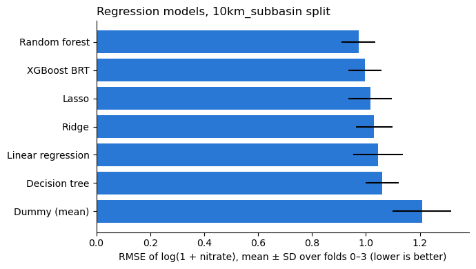
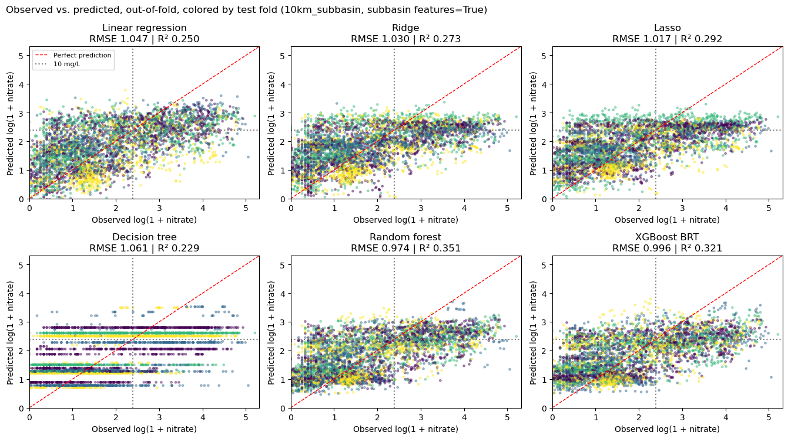
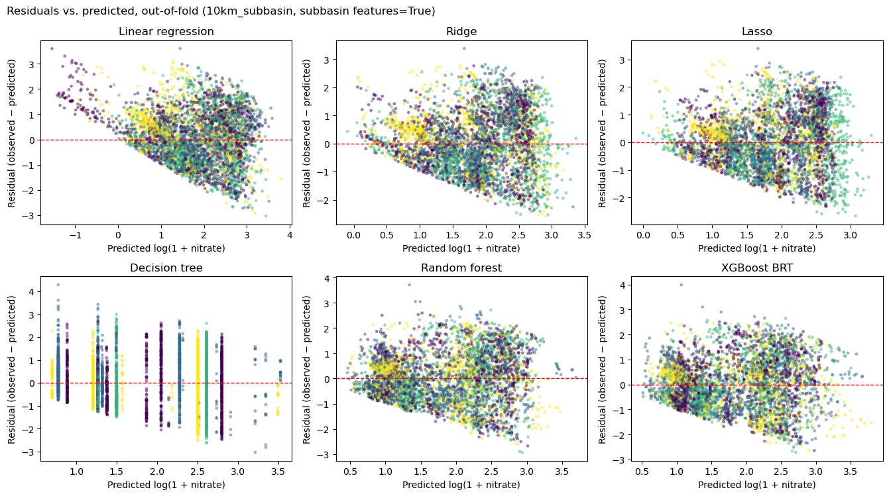
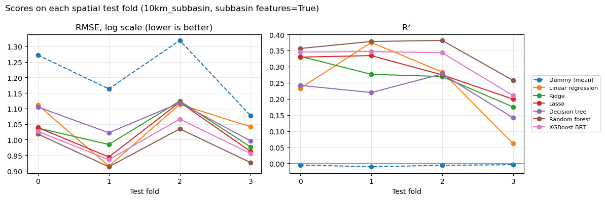

Code
%load_ext autoreload
%autoreload 2Here, we run all our regression models so that we can compare them side-by-side. We compare a dummy model and simple linear model to linear models with two regularization strategies (ridge and lasso), a decision tree model, a random forest model, and a boosted regression tree model. Hyperparameters are tuned with GridSearchCV or RandomizedSearchCV in each set of training folds, holding one whole fold out at the time, so the test fold is never used for tuning. We also run our models on several different splits to understand the limits of our models.
'''Import all relevant modules here and define root directory.'''
# Define root directory
import sys
from pathlib import Path
# Make src importable from any notebook folder (identical in every notebook)
sys.path.insert(0, str(next(p for p in [Path.cwd(), *Path.cwd().parents] if (p / "src").is_dir())))
from src import paths
ROOT = paths.ROOT
# Modules imported from outside
import numpy as np
import pandas as pd
import matplotlib.pyplot as plt
import xgboost
from sklearn.pipeline import make_pipeline
from sklearn.impute import SimpleImputer
from sklearn.preprocessing import StandardScaler
from sklearn.dummy import DummyRegressor
from sklearn.linear_model import LinearRegression, Ridge, Lasso
from sklearn.tree import DecisionTreeRegressor
from sklearn.ensemble import RandomForestRegressor
# Modules internal to this project
from src.models.evaluate import CONFIGS, run_models, tuned, all_features, linear_features, load_predictions
from src.evaluation.results_log import load_runs, summarizeThe following cell is used to set up necessary variables and define the parameter grids used for hyperparameter tuning.
RMSE = "neg_root_mean_squared_error" # Scoring method
TREE_DEPTHS = [2, 3, 4, 5, 6, 8, 10, 15] # For the decision tree model
RF_GRID = {
"max_depth": [6, 8, 11, 15, None],
"max_features": ["sqrt", 0.3, 0.5],
"min_samples_leaf": [1, 5, 20]
} # For the random forest model
BRT_GRID = {
"learning_rate": [0.03, 0.05],
"n_estimators": [20, 35, 50, 75, 100],
"max_depth": [2, 3, 4],
"min_child_weight": [5, 20, 50],
"subsample": [0.5, 0.7]
} # For the boosted regression tree modelThe following cell contains our list of regression models.
REGRESSION_MODELS = {
"Dummy (mean)": ("Team", lambda: DummyRegressor(strategy="mean"), all_features),
"Linear regression": ("Andrea", lambda: linear_pipe(LinearRegression()), linear_features),
"Ridge": ("Andrea", lambda: tuned(linear_pipe(Ridge()), {"ridge__alpha": np.logspace(0, 6, 13)}, RMSE), linear_features),
"Lasso": ("Andrea", lambda: tuned(linear_pipe(Lasso(max_iter=20_000)), {"lasso__alpha": [0.001, 0.003, 0.01, 0.03, 0.1, 0.2, 0.3, 0.5]}, RMSE), linear_features),
"Decision tree": ("Gavin", lambda: tuned(DecisionTreeRegressor(min_samples_leaf=20, random_state=0), {"max_depth": TREE_DEPTHS}, RMSE), all_features),
"Random forest": ("Charlsey", lambda: tuned(RandomForestRegressor(n_estimators=300, random_state=0, n_jobs=1), RF_GRID, RMSE, n_iter=10), all_features),
"XGBoost BRT": ("Karuna", lambda: tuned(xgboost.XGBRegressor(objective="reg:squarederror", max_bin=64, random_state=0, n_jobs=1), BRT_GRID, RMSE, n_iter=20), all_features),
}'''Run all models on each of the splits/configurations. Fold 4 in each split is set aside as the final hold-out.'''
RUN_MODELS = True # True: refit every model (about 20 minutes per notebook); False: load the saved predictions
if RUN_MODELS:
devs, oof = run_models(REGRESSION_MODELS, task="regression")
else:
devs, oof = load_predictions("regression")Saved 4 folds to results/model_runs/team__dummy-mean__regression__10km__subbasin0__noelev0.csv
10km subbasin=False Dummy (mean) 0.1 s
Saved 4 folds to results/model_runs/andrea__linear-regression__regression__10km__subbasin0__noelev0.csv
10km subbasin=False Linear regression 0.1 s
Saved 4 folds to results/model_runs/andrea__ridge__regression__10km__subbasin0__noelev0.csv
10km subbasin=False Ridge 3.9 s
Saved 4 folds to results/model_runs/andrea__lasso__regression__10km__subbasin0__noelev0.csv
10km subbasin=False Lasso 1.0 s
Saved 4 folds to results/model_runs/gavin__decision-tree__regression__10km__subbasin0__noelev0.csv
10km subbasin=False Decision tree 0.9 s
Saved 4 folds to results/model_runs/charlsey__random-forest__regression__10km__subbasin0__noelev0.csv
10km subbasin=False Random forest 30.3 s
Saved 4 folds to results/model_runs/karuna__xgboost-brt__regression__10km__subbasin0__noelev0.csv
10km subbasin=False XGBoost BRT 4.8 s
Saved 4 folds to results/model_runs/team__dummy-mean__regression__10km__subbasin1__noelev1.csv
10km subbasin=True Dummy (mean) 0.0 s
Saved 4 folds to results/model_runs/andrea__linear-regression__regression__10km__subbasin1__noelev1.csv
10km subbasin=True Linear regression 0.1 s
Saved 4 folds to results/model_runs/andrea__ridge__regression__10km__subbasin1__noelev1.csv
10km subbasin=True Ridge 1.1 s
Saved 4 folds to results/model_runs/andrea__lasso__regression__10km__subbasin1__noelev1.csv
10km subbasin=True Lasso 0.9 s
Saved 4 folds to results/model_runs/gavin__decision-tree__regression__10km__subbasin1__noelev1.csv
10km subbasin=True Decision tree 0.9 s
Saved 4 folds to results/model_runs/charlsey__random-forest__regression__10km__subbasin1__noelev1.csv
10km subbasin=True Random forest 28.7 s
Saved 4 folds to results/model_runs/karuna__xgboost-brt__regression__10km__subbasin1__noelev1.csv
10km subbasin=True XGBoost BRT 3.2 s
Saved 4 folds to results/model_runs/team__dummy-mean__regression__10km-subbasin__subbasin1__noelev1.csv
10km_subbasin subbasin=True Dummy (mean) 0.0 s
Saved 4 folds to results/model_runs/andrea__linear-regression__regression__10km-subbasin__subbasin1__noelev1.csv
10km_subbasin subbasin=True Linear regression 0.1 s
Saved 4 folds to results/model_runs/andrea__ridge__regression__10km-subbasin__subbasin1__noelev1.csv
10km_subbasin subbasin=True Ridge 1.1 s
Saved 4 folds to results/model_runs/andrea__lasso__regression__10km-subbasin__subbasin1__noelev1.csv
10km_subbasin subbasin=True Lasso 1.1 s
Saved 4 folds to results/model_runs/gavin__decision-tree__regression__10km-subbasin__subbasin1__noelev1.csv
10km_subbasin subbasin=True Decision tree 0.9 s
Saved 4 folds to results/model_runs/charlsey__random-forest__regression__10km-subbasin__subbasin1__noelev1.csv
10km_subbasin subbasin=True Random forest 29.2 s
Saved 4 folds to results/model_runs/karuna__xgboost-brt__regression__10km-subbasin__subbasin1__noelev1.csv
10km_subbasin subbasin=True XGBoost BRT 3.2 s
Saved 4 folds to results/model_runs/team__dummy-mean__regression__7-5km-subbasin__subbasin1__noelev1.csv
7.5km_subbasin subbasin=True Dummy (mean) 0.0 s
Saved 4 folds to results/model_runs/andrea__linear-regression__regression__7-5km-subbasin__subbasin1__noelev1.csv
7.5km_subbasin subbasin=True Linear regression 0.1 s
Saved 4 folds to results/model_runs/andrea__ridge__regression__7-5km-subbasin__subbasin1__noelev1.csv
7.5km_subbasin subbasin=True Ridge 1.1 s
Saved 4 folds to results/model_runs/andrea__lasso__regression__7-5km-subbasin__subbasin1__noelev1.csv
7.5km_subbasin subbasin=True Lasso 1.0 s
Saved 4 folds to results/model_runs/gavin__decision-tree__regression__7-5km-subbasin__subbasin1__noelev1.csv
7.5km_subbasin subbasin=True Decision tree 0.9 s
Saved 4 folds to results/model_runs/charlsey__random-forest__regression__7-5km-subbasin__subbasin1__noelev1.csv
7.5km_subbasin subbasin=True Random forest 29.6 s
Saved 4 folds to results/model_runs/karuna__xgboost-brt__regression__7-5km-subbasin__subbasin1__noelev1.csv
7.5km_subbasin subbasin=True XGBoost BRT 3.0 s
Saved 4 folds to results/model_runs/team__dummy-mean__regression__5km-subbasin__subbasin1__noelev1.csv
5km_subbasin subbasin=True Dummy (mean) 0.0 s
Saved 4 folds to results/model_runs/andrea__linear-regression__regression__5km-subbasin__subbasin1__noelev1.csv
5km_subbasin subbasin=True Linear regression 0.1 s
Saved 4 folds to results/model_runs/andrea__ridge__regression__5km-subbasin__subbasin1__noelev1.csv
5km_subbasin subbasin=True Ridge 1.1 s
Saved 4 folds to results/model_runs/andrea__lasso__regression__5km-subbasin__subbasin1__noelev1.csv
5km_subbasin subbasin=True Lasso 1.1 s
Saved 4 folds to results/model_runs/gavin__decision-tree__regression__5km-subbasin__subbasin1__noelev1.csv
5km_subbasin subbasin=True Decision tree 0.9 s
Saved 4 folds to results/model_runs/charlsey__random-forest__regression__5km-subbasin__subbasin1__noelev1.csv
5km_subbasin subbasin=True Random forest 31.0 s
Saved 4 folds to results/model_runs/karuna__xgboost-brt__regression__5km-subbasin__subbasin1__noelev1.csv
5km_subbasin subbasin=True XGBoost BRT 3.1 sWe now compare model performances across all configurations.
| split | 10km | 10km_subbasin | 5km_subbasin | 7.5km_subbasin | |
|---|---|---|---|---|---|
| use_subbasin | False | True | True | True | True |
| model | |||||
| Decision tree | 1.161 | 1.048 | 1.060 | 1.068 | 1.031 |
| Dummy (mean) | 1.236 | 1.236 | 1.208 | 1.208 | 1.208 |
| Lasso | 1.146 | 1.119 | 1.016 | 1.031 | 1.033 |
| Linear regression | 1.179 | 1.141 | 1.045 | 1.021 | 1.058 |
| Random forest | 1.078 | 1.047 | 0.973 | 0.990 | 0.998 |
| Ridge | 1.142 | 1.100 | 1.031 | 1.033 | 1.040 |
| XGBoost BRT | 1.094 | 1.047 | 0.996 | 0.994 | 1.032 |
See model performance on the main configuration: 10km grid cells stratified along subbasin, with subbasin data included as a feature.
MAIN = ("10km_subbasin", True)
main = reg_runs[(reg_runs["split"] == MAIN[0]) & (reg_runs["use_subbasin"] == MAIN[1])]
by_model = main.groupby("model")["rmse_log"].agg(["mean", "std"]).sort_values("mean")
fig, ax = plt.subplots(figsize=(7, 4))
ax.barh(by_model.index, by_model["mean"], xerr=by_model["std"], color="#2a78d6")
ax.invert_yaxis() # best model on top
ax.set_xlabel("RMSE of log(1 + nitrate), mean ± SD over folds 0–3 (lower is better)")
ax.set_title(f"Regression models, {MAIN[0]} split", loc="left")
ax.spines[["top", "right"]].set_visible(False)
plt.tight_layout()
fig.savefig(paths.FIGURES["regression"] / f"model_comparison_{MAIN[0]}.png", dpi=150, bbox_inches="tight")
plt.show()
from sklearn.metrics import root_mean_squared_error, r2_score, roc_auc_score
from src.evaluation import splits, leakage
CONFIG = ("10km_subbasin", True) # which configuration to plot
LOG_THRESHOLD = np.log1p(10) # the 10 mg/L limit on the log scale
FIGURES = paths.FIGURES["regression"]
FIGURES.mkdir(parents=True, exist_ok=True)
dev = devs[CONFIG]
y_true = dev["log_nitrate"].to_numpy()
exceeds = dev["exceeds"].to_numpy().astype(bool) # same labels as the classification notebook
folds = dev["fold"].to_numpy()
baseline = oof[("Dummy (mean)", *CONFIG)] # training-fold mean, for comparison
preds = {name: oof[(name, *CONFIG)] for name in REGRESSION_MODELS if not name.startswith("Dummy")}
TAG = f"{CONFIG[0]}, subbasin features={CONFIG[1]}"
def panels(n, ncols=3, width=4.5, height=3.8):
"""A grid with one panel per model; unused panels are hidden."""
nrows = -(-n // ncols)
fig, axs = plt.subplots(nrows, ncols, figsize=(width * ncols, height * nrows), squeeze=False)
axs = axs.ravel()
for ax in axs[n:]:
ax.set_axis_off()
return fig, axs
def save(fig, name):
fig.savefig(FIGURES / f"{name}_{CONFIG[0]}_subbasin{int(CONFIG[1])}.png", dpi=150, bbox_inches="tight")fig, axs = panels(len(preds))
lims = [0, y_true.max() * 1.02]
for ax, (name, pred) in zip(axs, preds.items()):
ax.scatter(y_true, pred, c=folds, cmap="viridis", s=6, alpha=0.4)
ax.plot(lims, lims, "r--", linewidth=1, label="Perfect prediction")
ax.axvline(LOG_THRESHOLD, color="gray", linestyle=":", label="10 mg/L")
ax.axhline(LOG_THRESHOLD, color="gray", linestyle=":")
ax.set(title=f"{name}\nRMSE {root_mean_squared_error(y_true, pred):.3f} | R² {r2_score(y_true, pred):.3f}",
xlabel="Observed log(1 + nitrate)", ylabel="Predicted log(1 + nitrate)", xlim=lims, ylim=lims)
axs[0].legend(fontsize=8, loc="upper left")
fig.suptitle(f"Observed vs. predicted, out-of-fold, colored by test fold ({TAG})", x=0.01, ha="left")
plt.tight_layout()
save(fig, "observed_vs_predicted")
plt.show()
fig, axs = panels(len(preds))
for ax, (name, pred) in zip(axs, preds.items()):
ax.scatter(pred, y_true - pred, c=folds, cmap="viridis", s=6, alpha=0.4)
ax.axhline(0, color="red", linestyle="--", linewidth=1)
ax.set(title=name, xlabel="Predicted log(1 + nitrate)", ylabel="Residual (observed − predicted)")
fig.suptitle(f"Residuals vs. predicted, out-of-fold ({TAG})", x=0.01, ha="left")
plt.tight_layout()
save(fig, "residuals")
plt.show()
rows = []
for name, pred in {"Dummy (mean)": baseline, **preds}.items():
for k in np.unique(folds):
in_fold = folds == k
rows.append({
"model": name, "fold": k,
"rmse_log": root_mean_squared_error(y_true[in_fold], pred[in_fold]),
"r2": r2_score(y_true[in_fold], pred[in_fold])
})
fold_metrics = pd.DataFrame(rows)
fig, axs = plt.subplots(1, 2, figsize=(12, 4))
for name, group in fold_metrics.groupby("model", sort=False):
style = "--" if name.startswith("Dummy") else "-"
axs[0].plot(group["fold"], group["rmse_log"], style, marker="o", label=name)
axs[1].plot(group["fold"], group["r2"], style, marker="o", label=name)
axs[0].set(title="RMSE, log scale (lower is better)", xlabel="Test fold", xticks=np.unique(folds))
axs[1].set(title="R²", xlabel="Test fold", xticks=np.unique(folds))
axs[1].axhline(0, color="gray", linewidth=0.8)
axs[1].legend(fontsize=8, loc="center left", bbox_to_anchor=(1.02, 0.5))
for ax in axs:
ax.grid(alpha=0.3)
fig.suptitle(f"Scores on each spatial test fold ({TAG})", x=0.01, ha="left")
plt.tight_layout()
save(fig, "fold_metrics")
plt.show()
rows = []
for name, pred in preds.items():
called = pred > LOG_THRESHOLD # predicted to exceed 10 mg/L
rows.append({
"model": name,
"auc_from_prediction": roc_auc_score(exceeds, pred),
"share_called_exceeding": called.mean(),
"recall": called[exceeds].mean(),
"precision": exceeds[called].mean() if called.any() else np.nan
})
print(f"Actual share exceeding: {exceeds.mean():.3f}")
pd.DataFrame(rows).set_index("model").round(3)Actual share exceeding: 0.319| auc_from_prediction | share_called_exceeding | recall | precision | |
|---|---|---|---|---|
| model | ||||
| Linear regression | 0.811 | 0.287 | 0.550 | 0.611 |
| Ridge | 0.801 | 0.239 | 0.463 | 0.617 |
| Lasso | 0.808 | 0.254 | 0.513 | 0.645 |
| Decision tree | 0.776 | 0.369 | 0.620 | 0.537 |
| Random forest | 0.839 | 0.259 | 0.543 | 0.668 |
| XGBoost BRT | 0.822 | 0.247 | 0.478 | 0.617 |
xy = leakage.projected_xy(dev, "gm_latitude", "gm_longitude")
nearest_m = np.full(len(dev), np.nan)
for train, test in splits.iter_folds(folds):
nearest_m[test] = leakage.nearest_training_distance(xy, train, test)
breakdown = pd.concat({name: leakage.distance_breakdown(y_true, pred, baseline, nearest_m) for name, pred in preds.items()}, names=["model"])
display(breakdown["improvement_over_mean"].unstack("model"))
breakdown.xs(next(iter(preds)), level="model")[["n", "share_of_test"]] # how many test samples per band| model | Linear regression | Ridge | Lasso | Decision tree | Random forest | XGBoost BRT |
|---|---|---|---|---|---|---|
| band | ||||||
| <0.5 km | 0.356 | 0.268 | 0.278 | 0.351 | 0.421 | 0.401 |
| 0.5-1 km | 0.128 | 0.103 | 0.122 | 0.097 | 0.181 | 0.133 |
| 1-2 km | 0.163 | 0.159 | 0.164 | 0.146 | 0.195 | 0.171 |
| 2-5 km | 0.135 | 0.162 | 0.170 | 0.111 | 0.191 | 0.169 |
| >5 km | 0.003 | 0.071 | 0.098 | 0.054 | 0.138 | 0.167 |
| n | share_of_test | |
|---|---|---|
| band | ||
| <0.5 km | 168 | 0.039 |
| 0.5-1 km | 484 | 0.114 |
| 1-2 km | 974 | 0.229 |
| 2-5 km | 2019 | 0.474 |
| >5 km | 611 | 0.144 |